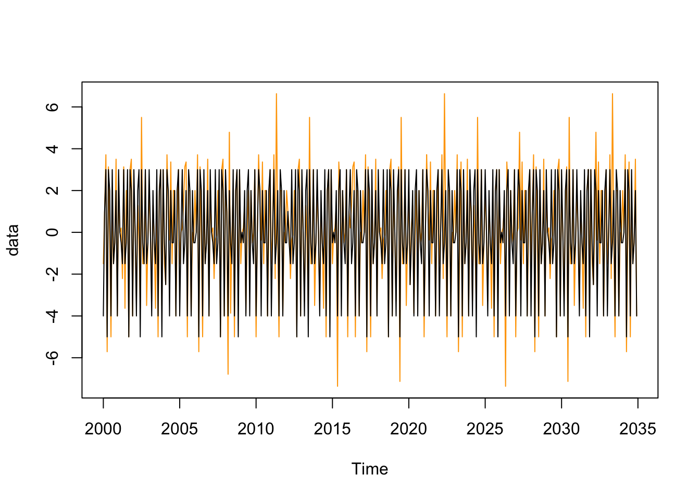

# # Configurer si besoin le proxy
# proxy <- "proxy_a_definir"
# Sys.setenv(HTTPS_PROXY = proxy)
remotes::install_github("palatej/rjd3toolkit",
INSTALL_opts = "--no-multiarch")
remotes::install_github("palatej/rjd3modelling",
INSTALL_opts = "--no-multiarch")2 - Correction des jours ouvrables
Formation - Désaisonnalisation avec JDemetra+ et RJDemetra 
L’objectif de ce TP est d’apprendre à créer des régresseurs jours ouvrables personnalisés, à les utiliser dans RJDemetra/JDemetra+ et à vérifier la qualité de la correction.
Attention
Ce TP a été actualisé en 2022 pour prendre en compte les nouveautés liées à la version 3 de JDemetra+ et son implémentation en . La fonction td.f() pour faire des tests de jours ouvrables résiduels est maintenant dans le package rjd3modelling et n’est plus dans le package rjd3sa (qui n’est donc plus utile pour ce TP).
Pour créer des régresseurs jours ouvrables personnalisés, deux solutions :
Le faire depuis JDemetra+, en créant un calendrier personnalisé puis en exportant les régresseurs. Voir par exemple la documentation de JDemetra+ ici et là.
Créer le calendrier depuis R à l’aide du package
rjd3modelling(qui dépend derjd3toolkit). Ces packages ne sont pas sur le CRAN, pour les installer on peut par exemple utiliser la fonctionremotes::install_github():
Dans ce TP, nous nous intéresserons uniquement à la seconde option. En effet, le package R est plus flexible et permet de créer des régresseurs moins classiques que les working days et trading days.
Cet énoncé a été préparé avec la version 0.5.0 des packages rjd3toolkit et rjd3modelling: dans les nouvelles versions, les noms des fonctions peuvent être différents. Pour installer cette version, vous pouvez utiliser le code suivante :
remotes::install_github("palatej/rjd3toolkit@v0.5.0")
remotes::install_github("palatej/rjd3modelling@v0.5.0")Si besoin, ci-dessous un exemple de code pour récupérer vos données :
fichier <- "../data/data_rte.xlsx"
# # Ou en téléchargeant le fichier depuis internet :
# fichier <- tempfile(fileext = "xlsx")
# url <- "https://aqlt.github.io/formations/2021/rte/data/data_rte.xlsx"
# download.file(url, fichier)
data_rte <- readxl::read_excel(fichier)
date_deb <- 2006
data_rte <- ts(data_rte[,-1], start = date_deb,
frequency = 12)Création de régresseurs JO avec rjd3modelling
Création d’un calendrier
Par défaut, les régresseurs jours ouvrables de JDemetra+ ne prennent pas en compte les spécificité calendaires des pays : on ne prend pas en compte les jours fériés. Pour les prendre en compte, il faut créer son propre calendrier où l’on supposera qu’un jour férié de plus dans le mois a le même effet qu’un dimanche.
Un nouveau calendrier avec la fonction calendar.new()
library(rjd3modelling)
frenchCalendar <- calendar.new()Trois fonctions peuvent être utilisées pour ajouter des jours fériés :
calendar.fixedday()pour ajouter un jour férié qui tombe à date fixe. Par exemple, pour ajouter le 8 mai :
calendar.fixedday(frenchCalendar, month = 5,
day = 8)calendar.easter()pour ajouter un jour férié dont le jour dépend de Pâques : le paramètreoffsetpermet de spécifier le nombre de jours avant (si négatif) ou après Pâques (si positif). Par exemple, pour ajouter la Pentecôte qui a lieu 60 jours après Pâques :
calendar.easter(frenchCalendar,
offset = 60)calendar.holiday()qui permet d’ajouter des jours fériés par rapport à des dates déjà connues dans JDemetra+ (voir tableau ci-dessous). Comme pour la fonctioncalendar.easter(), le paramètreoffsetpermet de spécifier la position du jour voulu par rapport rapport à la fête pré-spécifié (par défautoffset = 0, le jour férié coïncide avec le jour pré-spécifié). Par exemple, pour ajouter le nouvel an :
calendar.holiday(frenchCalendar, "NEWYEAR")| Event | Définition |
|---|---|
| NEWYEAR | Fête fixe, 1er janvier. |
| SHROVEMONDAY | Fête mobile, lundi avant le mecredi des cendres (48 jours avant pâques). |
| SHROVETUESDAY | Fête mobile, mardi avant le mecredi des cendres (47 jours avant pâques). |
| ASHWEDNESDAY | Fête mobile, 46 jours avant Pâques. |
| EASTER | Fête mobile, Pâques, varie entre le 22 mars et le 25 avril. |
| MAUNDYTHURSDAY | Fête mobile, le jeudi avant Pâques. |
| GOODFRIDAY | Fête mobile, le vendredi avant Pâques. |
| EASTERMONDAY | Fête mobile, le lendemain de Pâques. |
| ASCENSION | Fête mobile, célébrée un jeudi, 40 jours après Pâques. |
| PENTECOST | Fête mobile, 50 jours après Pâques. |
| CORPUSCHRISTI | Fête mobile, 60 jours après Pâques. |
| WHITMONDAY | Fête mobile, le jour après la Pentecôte. |
| MAYDAY | Fête fixe, 1er mai. |
| ASSUMPTION | Fête fixe, 15 août. |
| HALLOWEEN | Fête fixe, 31 octobre. |
| ALLSAINTSDAY | Fête fixe, 1er novembre. |
| ARMISTICE | Fête fixe, 11 novembre. |
| CHRISTMAS | Fête fixe, 25 décembre. |
Exercice
Créer un calendrier qui contient tous les jours fériés de la France.
Solution
frenchCalendar <- calendar.new()
calendar.holiday(frenchCalendar, "NEWYEAR")
calendar.holiday(frenchCalendar, "EASTERMONDAY") # Lundi de Pâques
calendar.holiday(frenchCalendar, "MAYDAY") # 1er mai
calendar.fixedday(frenchCalendar, 5, 8)
calendar.holiday(frenchCalendar, "WHITMONDAY") # Lundi de Pentecôte
calendar.fixedday(frenchCalendar, 7, 14)
calendar.holiday(frenchCalendar, "ASSUMPTION") # Assomption
calendar.holiday(frenchCalendar, "ALLSAINTSDAY") # Toussaint
calendar.holiday(frenchCalendar, "ARMISTICE")Création de régresseurs JO
Le modèle général de correction de jours ouvrables peut s’écrire de la façon suivante : \[ X_t = \sum_{i=1}^{7} \alpha_i N_{it} + \varepsilon_t \] Avec :
\(N_{it}\) le nombre de jours de lundis (\(i=1\)), …, dimanches et jours fériés (\(i=7\))
\(\alpha_i\) l’effet d’un jour de type \(i\)
Pour éviter les problèmes de multi-colinéarité, on réécrit le modèle en utilisant une modalité de référence (ici dimanche). On désaisonnalise également les régresseurs en enlevant la moyenne de long-terme : \[X_t = \sum_{i=1}^{6} \beta_i (N_{it} - N_{7t}) + \bar{\alpha} \underbrace{(N_t - \bar{N}_t)}_{LY_t} + \varepsilon_t\] Ce modèle peut être simplifié si en faisant des hypothèses sur les effets des jours ouvrés :
L’hypothèse working days correspond au cas où l’on suppose que tous les jours de la semaine (lundi à vendredi) ont le même effet (\(\alpha_1=\dots=\alpha_5\)), les samedis et les dimanches (et jours fériés) ont le même effet (\(\alpha_6=\alpha_7\)) et sont utilisés en tant que variable de contraste.
L’hypothèse trading days correspond au cas où l’on suppose que tous les jours ont un effet différent et les dimanches (et jours fériés) sont utilisés en tant que variable de constrate.
Sous JDemetra+ on ne peut utiliser que ces deux hypothèses mais rjd3modelling permet de construire d’autres types de J0.
De manière plus générale, lorsque l’on utilise une variable de contraste, les régresseurs \(CJO_{t,i}\) associé au groupe \(i\) est calculé de la façon suivante : \[ CJO_{t,i} = \underbrace{\sum_{j\in\text{groupe }i}N_{jt}}_{ \text{nb de jours du groupe }i } - \frac{\sum_{j\in\text{groupe }i}1}{\sum_{j\in\text{groupe }0}1} \times \underbrace{\sum_{j\in\text{groupe }0}N_{jt}}_{ \text{nb de jours du groupe contraste} } \] Dans le cas working days, il y a 2 jours dans le groupe contraste (samedi et dimanche, \(\sum_{j\in\text{groupe }0}1=2\)) et 5 jours dans le groupe 1 (lundi à vendredi, \(\sum_{j\in\text{groupe }1}1=5\)). Au mois \(t\), le régresseurs JO type de jours est donc égal au nombre de jours de la semaine dans le mois, mois \(5/2\times\) nombre de jours de week-end.
Les régresseurs J0 peuvent être créés à partir de 2 fonctions : htd() qui permet de les créer à partir d’un calendrier spécifique et td(). Dans ces fonctions, le paramètre le plus important est groups pour permet de faire des hypothèses sur les jours. C’est un vecteur de longueur 7 (le nombre de jours de la semaine) dont chaque élément indique à quel groupe le jour de la semaine associé correspond. La variable de contraste est associé au groupe 0.
Par exemple, groups = c(1,2,3,4,5,6,0) correspond au trading days et groups = c(1,1,1,1,1,0,0) correspond au working days.
Par exemple :
groups <- c(1, 2, 3, 4, 5, 6, 0)
frequency <- 12
start <- c(2000,1)
wkd <- htd(frenchCalendar, frequency = frequency, start = start, length = 12*35,
groups = groups)
wkd <- ts(wkd, start = start, frequency = frequency)
Exercice
Comparer le régresseurs JO working days créé avec le calendrier français et celui sans hypothèse sur les jours fériés (fonction td()).
Solution
groups <- c(1, 1, 1, 1, 1, 0, 0)
frequency <- 12
start <- c(2000,1)
wkd <- htd(frenchCalendar, frequency = frequency, start = start, length = 12*35,
groups = groups)
wkd <- ts(wkd, start = start, frequency = frequency)
wkd_def <- td(frequency = frequency, start = start, length = 12*35,
groups = groups)
wkd_def <- ts(wkd_def, start = start, frequency = frequency)
data <- ts.union(wkd, wkd_def)
plot(data, col = c("orange","black"),
plot.type = "single")
Régresseur leap year
Le régresseur année bissextile (leap year), \(LY_t\) doit être créé à la main. Il est égal à la différence entre le nombre de jours dans le mois \(t\) et le nombre de jours moyens dans le mois \(t\), \(\bar N_t\). Tous les mois ont le même nombre de jours, sauf le mois de février qui est de 29 jours tous les 4 ans. \(\bar N_t\) est donc égal à 30 ou 31 si le mois considéré n’est pas un mois de février (et donc \(N_t - \bar N_t=0\)) à 28,25 en février1. \[ LY_{t} = \begin{cases} 0,75 & \mbox{si } t \mbox{ est un mois de février bissextil } \\ -0,25 & \mbox{si } t \mbox{ est un mois de février non bissextil } \\ 0 & \mbox{sinon} \end{cases} \]
Exercice
Créer une fonction leap_year qui permet de générer le régresseur leap year.
Solution
leap_year <- function(start = 1990, end = 2030, frequency = 12){
ly <- ts(0, start = start, end = end, frequency = 12)
mois_feb <- cycle(ly) == 2
annees <- trunc(round(time(ly), 3)) # arrondi car parfois des pbs avec fonction time
# On utilise la définition exacte
is_ly <- (annees %% 400 == 0) |
((annees %% 4 == 0) & (annees %% 100 != 0))
ly[mois_feb] <- 28 - 28.2425
ly[mois_feb & is_ly] <- 29 - 28.2425
# on change si besoin la fréquence
stats::aggregate(ly, nfrequency = frequency)
}
leap_year(frequency = 12) Jan Feb Mar Apr May Jun Jul Aug Sep
1990 0.0000 -0.2425 0.0000 0.0000 0.0000 0.0000 0.0000 0.0000 0.0000
1991 0.0000 -0.2425 0.0000 0.0000 0.0000 0.0000 0.0000 0.0000 0.0000
1992 0.0000 0.7575 0.0000 0.0000 0.0000 0.0000 0.0000 0.0000 0.0000
1993 0.0000 -0.2425 0.0000 0.0000 0.0000 0.0000 0.0000 0.0000 0.0000
1994 0.0000 -0.2425 0.0000 0.0000 0.0000 0.0000 0.0000 0.0000 0.0000
1995 0.0000 -0.2425 0.0000 0.0000 0.0000 0.0000 0.0000 0.0000 0.0000
1996 0.0000 0.7575 0.0000 0.0000 0.0000 0.0000 0.0000 0.0000 0.0000
1997 0.0000 -0.2425 0.0000 0.0000 0.0000 0.0000 0.0000 0.0000 0.0000
1998 0.0000 -0.2425 0.0000 0.0000 0.0000 0.0000 0.0000 0.0000 0.0000
1999 0.0000 -0.2425 0.0000 0.0000 0.0000 0.0000 0.0000 0.0000 0.0000
2000 0.0000 0.7575 0.0000 0.0000 0.0000 0.0000 0.0000 0.0000 0.0000
2001 0.0000 -0.2425 0.0000 0.0000 0.0000 0.0000 0.0000 0.0000 0.0000
2002 0.0000 -0.2425 0.0000 0.0000 0.0000 0.0000 0.0000 0.0000 0.0000
2003 0.0000 -0.2425 0.0000 0.0000 0.0000 0.0000 0.0000 0.0000 0.0000
2004 0.0000 0.7575 0.0000 0.0000 0.0000 0.0000 0.0000 0.0000 0.0000
2005 0.0000 -0.2425 0.0000 0.0000 0.0000 0.0000 0.0000 0.0000 0.0000
2006 0.0000 -0.2425 0.0000 0.0000 0.0000 0.0000 0.0000 0.0000 0.0000
2007 0.0000 -0.2425 0.0000 0.0000 0.0000 0.0000 0.0000 0.0000 0.0000
2008 0.0000 0.7575 0.0000 0.0000 0.0000 0.0000 0.0000 0.0000 0.0000
2009 0.0000 -0.2425 0.0000 0.0000 0.0000 0.0000 0.0000 0.0000 0.0000
2010 0.0000 -0.2425 0.0000 0.0000 0.0000 0.0000 0.0000 0.0000 0.0000
2011 0.0000 -0.2425 0.0000 0.0000 0.0000 0.0000 0.0000 0.0000 0.0000
2012 0.0000 0.7575 0.0000 0.0000 0.0000 0.0000 0.0000 0.0000 0.0000
2013 0.0000 -0.2425 0.0000 0.0000 0.0000 0.0000 0.0000 0.0000 0.0000
2014 0.0000 -0.2425 0.0000 0.0000 0.0000 0.0000 0.0000 0.0000 0.0000
2015 0.0000 -0.2425 0.0000 0.0000 0.0000 0.0000 0.0000 0.0000 0.0000
2016 0.0000 0.7575 0.0000 0.0000 0.0000 0.0000 0.0000 0.0000 0.0000
2017 0.0000 -0.2425 0.0000 0.0000 0.0000 0.0000 0.0000 0.0000 0.0000
2018 0.0000 -0.2425 0.0000 0.0000 0.0000 0.0000 0.0000 0.0000 0.0000
2019 0.0000 -0.2425 0.0000 0.0000 0.0000 0.0000 0.0000 0.0000 0.0000
2020 0.0000 0.7575 0.0000 0.0000 0.0000 0.0000 0.0000 0.0000 0.0000
2021 0.0000 -0.2425 0.0000 0.0000 0.0000 0.0000 0.0000 0.0000 0.0000
2022 0.0000 -0.2425 0.0000 0.0000 0.0000 0.0000 0.0000 0.0000 0.0000
2023 0.0000 -0.2425 0.0000 0.0000 0.0000 0.0000 0.0000 0.0000 0.0000
2024 0.0000 0.7575 0.0000 0.0000 0.0000 0.0000 0.0000 0.0000 0.0000
2025 0.0000 -0.2425 0.0000 0.0000 0.0000 0.0000 0.0000 0.0000 0.0000
2026 0.0000 -0.2425 0.0000 0.0000 0.0000 0.0000 0.0000 0.0000 0.0000
2027 0.0000 -0.2425 0.0000 0.0000 0.0000 0.0000 0.0000 0.0000 0.0000
2028 0.0000 0.7575 0.0000 0.0000 0.0000 0.0000 0.0000 0.0000 0.0000
2029 0.0000 -0.2425 0.0000 0.0000 0.0000 0.0000 0.0000 0.0000 0.0000
2030 0.0000
Oct Nov Dec
1990 0.0000 0.0000 0.0000
1991 0.0000 0.0000 0.0000
1992 0.0000 0.0000 0.0000
1993 0.0000 0.0000 0.0000
1994 0.0000 0.0000 0.0000
1995 0.0000 0.0000 0.0000
1996 0.0000 0.0000 0.0000
1997 0.0000 0.0000 0.0000
1998 0.0000 0.0000 0.0000
1999 0.0000 0.0000 0.0000
2000 0.0000 0.0000 0.0000
2001 0.0000 0.0000 0.0000
2002 0.0000 0.0000 0.0000
2003 0.0000 0.0000 0.0000
2004 0.0000 0.0000 0.0000
2005 0.0000 0.0000 0.0000
2006 0.0000 0.0000 0.0000
2007 0.0000 0.0000 0.0000
2008 0.0000 0.0000 0.0000
2009 0.0000 0.0000 0.0000
2010 0.0000 0.0000 0.0000
2011 0.0000 0.0000 0.0000
2012 0.0000 0.0000 0.0000
2013 0.0000 0.0000 0.0000
2014 0.0000 0.0000 0.0000
2015 0.0000 0.0000 0.0000
2016 0.0000 0.0000 0.0000
2017 0.0000 0.0000 0.0000
2018 0.0000 0.0000 0.0000
2019 0.0000 0.0000 0.0000
2020 0.0000 0.0000 0.0000
2021 0.0000 0.0000 0.0000
2022 0.0000 0.0000 0.0000
2023 0.0000 0.0000 0.0000
2024 0.0000 0.0000 0.0000
2025 0.0000 0.0000 0.0000
2026 0.0000 0.0000 0.0000
2027 0.0000 0.0000 0.0000
2028 0.0000 0.0000 0.0000
2029 0.0000 0.0000 0.0000
2030 Exercice bilan
Exercice
Créer un objet regresseurs_JO qui contiendra tous les jeux de régresseurs plausibles. Par exemple :
le régresseur leap year
le jeu de régresseur trading days (
REG6, lundi à samedi, dimanche = contraste)le jeu de régresseur working days (
REG1, lundi =… = vendredi, samedi=dimanche=contraste)le jeu
REG2: lundi = … = vendredi, samedi et dimanche = contrastele jeu
REG3: lundi, mardi = … = vendredi, samedi = dimanche = contrastele jeu
REG5: lundi à vendredi, samedi = dimanche = contraste
Solution
frequency <- 12
start <- c(1990,1)
end = c(2030, 1)
length = (end[1] - start[1]) * 12 + end[2] - start[2]
ly <- leap_year(frequency = frequency, start = start,
end = end)
reg6 <- htd(frenchCalendar, frequency = frequency, start = start, length = length,
groups = c(1, 2, 3, 4, 5, 6, 0))
reg5 <- htd(frenchCalendar, frequency = frequency, start = start, length = length,
groups = c(1, 2, 3, 4, 5, 0, 0))
reg3 <- htd(frenchCalendar, frequency = frequency, start = start, length = length,
groups = c(1, 2, 2, 2, 2, 0, 0))
reg2 <- htd(frenchCalendar, frequency = frequency, start = start, length = length,
groups = c(1, 1, 1, 1, 1, 2, 0))
reg1 <- htd(frenchCalendar, frequency = frequency, start = start, length = length,
groups = c(1, 1, 1, 1, 1, 0, 0))
regresseurs_JO <- ts(cbind(reg1, reg2, reg3, reg5, reg6),
start = start, frequency = frequency)
regresseurs_JO <- ts.union(regresseurs_JO,
ly)
colnames(regresseurs_JO) <- c("REG1_semaine",
sprintf("REG2_%s", c("lundi_a_vendredi", "samedi")),
sprintf("REG3_%s", c("lundi", "mardi_a_vendredi")),
sprintf("REG5_%s", c("lundi", "mardi", "mercredi", "jeudi", "vendredi")),
sprintf("REG6_%s", c("lundi", "mardi", "mercredi", "jeudi", "vendredi", "samedi")),
"leap_year")Effet graduel de Pâques
Prenons l’exemple de la vente de chocolats. Il est assez commun d’offrir des chocolats à Pâques : il y a donc une hausse des ventes autour du lundi de Pâques. Toutefois, ces ventes ne se font pas le jour de Pâques mais plusieurs jours avant, et plus on se rapproche du jour J, plus ces ventes sont importantes. C’est ce que l’on appel l’effet graduel de Pâques. Sous JDemetra+ on peut définir le nombre de jours avant Pâques pour lequel on considère qu’il y a un effet (easter.duration, entre 1 et 20) ou laisser ce choix à JDemetra+.
Exercice
Serait-il pertinent de considérer un effet graduel de Noël dans le modèle Reg-ARIMA ?
Solution
Non car l’effet graduel de Noël est en fait saisonnier car c’est un jour fixe ! Pour Pâques, comme c’est une fête mobile, les jours précédents peuvent être dans des mois différents en fonction de l’année considérée. Je ne suis pas entré dans les détails mais le régresseur utilisé pour la correction de l’effet graduel de Pâques est désaisonnalisé pour ne prendre en compte que les régresseurs.
Utilisation des régresseurs dans RJDemetra
Dans RJDemetra, pour utiliser nos régresseurs jours ouvrables personnalisés, il faut créer sa propre spécification (fonctions x13_spec() ou regarima_spec_x13()) en utilisant l’option usrdef.varEnabled = TRUE, en spécifiant les régresseurs dans usrdef.var et indiquant que les régresseurs sont des régresseurs calendaires avec l’option usrdef.varType = "Calendar". Par exemple :
library(RJDemetra)
ipi_fr <- ipi_c_eu[, "FR"]
# On arrête la série en décembre 2019 pour éviter les changements de résultats
# liés aux futures actualisation des données de RJDemetra
ipi_fr <- window(ipi_fr, end = c(2019, 12))
# on garde le jeu reg6
wkd <- regresseurs_JO[,c(grep("REG6", colnames(regresseurs_JO), value = TRUE),
"leap_year")]
# Pour simplifier l'output, on enlève le "REG6_"
# mais ce n'est pas obligatoire
colnames(wkd) <- gsub("REG6_", "", colnames(wkd))
myspec1 <- regarima_spec_x13(spec = "RG5c",
usrdef.varEnabled = TRUE,
usrdef.var = wkd,
usrdef.varType = "Calendar",
easter.enabled = FALSE)
myreg1 <- regarima(ipi_fr, myspec1)
summary(myreg1)y = regression model + arima (0, 1, 1, 0, 1, 1)
Model: RegARIMA - X13
Estimation span: from 1-1990 to 12-2019
Log-transformation: yes
Regression model: no mean, trading days effect(7), no leap year effect, no Easter effect, outliers(3)
Coefficients:
ARIMA:
Estimate Std. Error T-stat Pr(>|t|)
Theta(1) -0.50798 0.04734 -10.73 <2e-16 ***
BTheta(1) -0.64138 0.04265 -15.04 <2e-16 ***
---
Signif. codes: 0 '***' 0.001 '**' 0.01 '*' 0.05 '.' 0.1 ' ' 1
Regression model:
Estimate Std. Error T-stat Pr(>|t|)
lundi 0.002783 0.001300 2.141 0.032971 *
mardi 0.009488 0.001427 6.648 1.16e-10 ***
mercredi 0.006995 0.001467 4.767 2.75e-06 ***
jeudi 0.009785 0.001495 6.545 2.14e-10 ***
vendredi 0.006426 0.001472 4.365 1.68e-05 ***
samedi -0.014138 0.001362 -10.380 < 2e-16 ***
leap_year 0.019624 0.005601 3.504 0.000519 ***
LS (11-2008) -0.082057 0.014452 -5.678 2.89e-08 ***
LS (1-2009) -0.070878 0.014473 -4.897 1.49e-06 ***
AO (5-2011) 0.065055 0.014619 4.450 1.16e-05 ***
---
Signif. codes: 0 '***' 0.001 '**' 0.01 '*' 0.05 '.' 0.1 ' ' 1
Residual standard error: 0.01751 on 334 degrees of freedom
Log likelihood = 907.8, aic = 1416, aicc = 1417, bic(corrected for length) = -7.887
Pour information
Pour ne pas repartir de zéro et avoir des modèles, il y a sous JDemetra+ 13 spécifications pré-définies décrites ici ou dans l’aide des fonction RJDemetra associés (?regarima, ?x13 ou ?tramoseats).
Pour faire des tests multiples sur les régresseurs jours ouvrables, on peut utiliser la fonction car::linearHypothesis(). Dans le modèle précédent, il parait clair que les régresseurs jours ouvrables sont significatifs. Toutefois, on peut se demander, si par parcimonie on peut simplifier le modèle en regroupant les jours de la semaine :
library(car)
linearHypothesis(myreg1,
c("lundi","mardi","mercredi","jeudi","vendredi","samedi"),
c(0, 0, 0, 0, 0, 0), test = "F")Linear hypothesis test
Hypothesis:
lundi = 0
mardi = 0
mercredi = 0
jeudi = 0
vendredi = 0
samedi = 0
Model 1: restricted model
Model 2: myreg1
Res.Df Df F Pr(>F)
1 340
2 334 6 178.21 < 2.2e-16 ***
---
Signif. codes: 0 '***' 0.001 '**' 0.01 '*' 0.05 '.' 0.1 ' ' 1linearHypothesis(myreg1,
c("lundi = mardi","mardi = mercredi","mercredi = jeudi","jeudi = vendredi"), test = "F")Linear hypothesis test
Hypothesis:
lundi - mardi = 0
mardi - mercredi = 0
mercredi - jeudi = 0
jeudi - vendredi = 0
Model 1: restricted model
Model 2: myreg1
Res.Df Df F Pr(>F)
1 338
2 334 4 4.0567 0.003168 **
---
Signif. codes: 0 '***' 0.001 '**' 0.01 '*' 0.05 '.' 0.1 ' ' 1
Exercice
Essayez maintenant sur vos propres séries. Tester de laisser ou non l’effet graduel de Pâques (easter.enabled = TRUE)
Test de la présence de jours ouvrables résiduels
Un point important lorsque le fait de la correction de jours ouvrables est de tester s’il reste un effet jour ouvrable après la correction. La fonction rjd3modelling::td.f() peut aider à le faire.
Généralement ce test est effectué après la décomposition, sur la composante désaisonnalisée ou sur l’irrégulier. Plutôt que la fonction regarima on va utiliser la fonction x13 qui effectue la décomposition sur la série linéarisée. Ces tests sont disponibles dans le sous-objet .$diagnostics (“f-test on sa (td)” et “f-test on i (td)”) :
myspec1_sa <- x13_spec(spec = "RSA5c",
usrdef.varEnabled = TRUE,
usrdef.var = wkd,
usrdef.varType = "Calendar",
easter.enabled = FALSE)
mysa <- x13(ipi_fr, myspec1_sa)
# On retrouve d'ailleurs la partie regarima
# summary(mysa$regarima)
mysa$diagnostics Relative contribution of the components to the stationary
portion of the variance in the original series,
after the removal of the long term trend
Trend computed by Hodrick-Prescott filter (cycle length = 8.0 years)
Component
Cycle 1.983
Seasonal 64.165
Irregular 0.541
TD & Hol. 2.735
Others 32.264
Total 101.687
Combined test in the entire series
Non parametric tests for stable seasonality
P.value
Kruskall-Wallis test 0.000
Test for the presence of seasonality assuming stability 0.000
Evolutive seasonality test 0.236
Identifiable seasonality present
Residual seasonality tests
P.value
qs test on sa 1.000
qs test on i 1.000
f-test on sa (seasonal dummies) 0.922
f-test on i (seasonal dummies) 0.837
Residual seasonality (entire series) 0.965
Residual seasonality (last 3 years) 1.000
f-test on sa (td) 0.010
f-test on i (td) 0.058Sous JDemetra+, les tests affichés portent sur les 8 dernières années et dans RJDemetra sur la série entière ! Pour reproduire les résultats de JDemetra+, utiliser la fonction rjd3modelling::td.f(). Pour le test, six spécifications différentes sont possibles :
Par défaut sous JDemetra+ et
model = "R100"sousrjd3modelling\[ y_t=c + \alpha y_{t-1} + \sum_{i=1}^{6} \beta_i (N_{it} - N_{7t}) + \varepsilon_t \]model = "D1"\[ \Delta y_t - \overline{\Delta y} =\sum_{i=1}^{6} \beta_i (N_{it} - N_{7t}) + \varepsilon_t \]model = "WN"\[ y_t - \bar y =\sum_{i=1}^{6} \beta_i (N_{it} - N_{7t}) + \varepsilon_t \] avec \(y_t\) pris en logarithme si le schéma est multiplicatif. Dans tous les cas \((H_0):\beta_1=\dots = \beta_6=0\) et les régresseurs utilisés ne prennent pas en compte le calendrier personnalisé que l’on a créé !
# Pour l'installer :
# remotes::install_github("palatej/rjd3modelling")\
library(rjd3modelling)
# Schéma multiplicatif :
mysa$regarima$model$spec_rslt["Log transformation"] Log transformation
1 TRUEsa <- mysa$final$series[,"sa"]
i <- mysa$final$series[,"i"]
rjd3modelling::td.f(log(sa), nyears = 8)Value: 5.267749
P-Value: 0.0001 rjd3modelling::td.f(log(i), nyears = 8)Value: 5.596639
P-Value: 0.0001 En réalité les tests affichés dans JDemetra+ et RJDemetra ne sont pas effectuées sur les composantes “finales” de l’irrégulier et la série désaisonnalisée, mais sur les composantes issues de X-11 avant ajout des points atypiques du préajustement. Pour X-13-ARIMA ces séries ne pour l’instant pas facilement exportables (et je ce n’est sûrement pas possible de l’exporter depuis JDemetra+), mais heureusement pour vous, il existe une “solution” en utilisant la fonction suivante.
# Résultats différents sur l'ensemble de la série
rjd3modelling::td.f(log(sa), nyears = 0)Value: 3.151896
P-Value: 0.0050 rjd3modelling::td.f(log(i), nyears = 0)Value: 2.512405
P-Value: 0.0215 extract_sa_cmp <- function(x, comp = "sa", forecast = FALSE){
# valeurs possibles pour comp : y, t, sa, s, i
jmodel <- suppressWarnings(jx13(get_ts(x), x13_spec(x)))
jres <- jmodel$result@internal$getResults()
jres <- new(Class = "X13_java", internal = jres)
if (forecast) {
s_forecast = "_f"
} else {
s_forecast = ""
}
RJDemetra:::result(jres,
sprintf("decomposition.%s_cmp%s",
comp,
s_forecast))
}
sa <- extract_sa_cmp(mysa, "sa")
i <- extract_sa_cmp(mysa, "i")
# Pour mettre tous les résultats sous forme de matrice :
t(simplify2array(
list(rjd3modelling::td.f(log(sa), nyears = 8),
rjd3modelling::td.f(log(i), nyears = 8),
rjd3modelling::td.f(log(sa), nyears = 0),
rjd3modelling::td.f(log(i), nyears = 0))
)) value pvalue
[1,] 5.267749 0.0001100706
[2,] 5.596639 5.799578e-05
[3,] 2.949279 0.008035661
[4,] 3.063659 0.006181793 Une autre solution est de passer par les objets jSA et d’exporter les indicateurs "diagnostics.td-i-last" et "diagnostics.td-sa-last", ou bien de rajouter ces indicateurs dans le paramètre userdefined de x13() :
jsa <- jx13(get_ts(mysa), x13_spec(mysa))
get_indicators(jsa,"diagnostics.td-sa-last")$`diagnostics.td-sa-last`
[1] 3.344080933 0.005148262
attr(,"description")
[1] "F with 6 degrees of freedom in the nominator and 88 degrees of freedom in the denominator"get_indicators(jsa,"diagnostics.td-i-last")$`diagnostics.td-i-last`
[1] 2.58322732 0.02366265
attr(,"description")
[1] "F with 6 degrees of freedom in the nominator and 88 degrees of freedom in the denominator"mysa <- x13(ipi_fr, myspec1_sa, userdefined = c("diagnostics.td-sa-last", "diagnostics.td-i-last"))
mysa$user_defined$`diagnostics.td-sa-last`[1] 3.344080933 0.005148262
attr(,"description")
[1] "F with 6 degrees of freedom in the nominator and 88 degrees of freedom in the denominator"mysa$user_defined$`diagnostics.td-i-last`[1] 2.58322732 0.02366265
attr(,"description")
[1] "F with 6 degrees of freedom in the nominator and 88 degrees of freedom in the denominator"# # ou :
# t(simplify2array(
# mysa$user_defined
# ))Privilégier plutôt ces deux dernières solutions, cela évite se regarder le schéma de décomposition (mais on ne peut pas personnaliser le test).
Exercice
Essayez de corriger l’effet JO résiduel sur cette série.
Indice
La spécification parait bonne, les régresseurs sont tous significatifs mais le modèle ARIMA est estimé sur 30 ans, ce qui peut paraitre beaucoup.
Solution
# Une option serait de couper les régresseurs J0 en deux
td_reg_post_2003 <- td_reg_pre_2003 <-
regresseurs_JO[,grep("REG6", colnames(regresseurs_JO))]
window(td_reg_pre_2003, end = c(2002, 12)) <- 0
window(td_reg_post_2003, start = c(2003, 1)) <- 0
wkd2 <- ts.union(td_reg_pre_2003, td_reg_post_2003,
leap_year(frequency = 12))
colnames(wkd2) <- c(paste0(c("lundi","mardi","mercredi","jeudi","vendredi",
"samedi"),"_av2003"),
paste0(c("lundi","mardi","mercredi","jeudi","vendredi",
"samedi"),"_ap2003"),"leap_year")
myspec2_sa <- x13_spec(spec = "RSA5c",
usrdef.varEnabled = TRUE,
usrdef.var = wkd2,
usrdef.varType = "Calendar",
easter.enabled = FALSE)
mysa2 <- x13(ipi_fr, myspec2_sa,
userdefined = c("diagnostics.td-sa-last", "diagnostics.td-i-last"))
summary(mysa2$regarima)y = regression model + arima (0, 1, 1, 0, 1, 1)
Model: RegARIMA - X13
Estimation span: from 1-1990 to 12-2019
Log-transformation: yes
Regression model: no mean, trading days effect(13), no leap year effect, no Easter effect, outliers(3)
Coefficients:
ARIMA:
Estimate Std. Error T-stat Pr(>|t|)
Theta(1) -0.48540 0.04856 -9.995 <2e-16 ***
BTheta(1) -0.62431 0.04349 -14.356 <2e-16 ***
---
Signif. codes: 0 '***' 0.001 '**' 0.01 '*' 0.05 '.' 0.1 ' ' 1
Regression model:
Estimate Std. Error T-stat Pr(>|t|)
lundi_av2003 0.003249 0.001655 1.963 0.050434 .
mardi_av2003 0.011820 0.001867 6.332 7.48e-10 ***
mercredi_av2003 0.005254 0.001930 2.722 0.006809 **
jeudi_av2003 0.011647 0.001935 6.018 4.49e-09 ***
vendredi_av2003 0.007292 0.001911 3.816 0.000161 ***
samedi_av2003 -0.017684 0.001799 -9.828 < 2e-16 ***
lundi_ap2003 0.002618 0.002069 1.265 0.206554
mardi_ap2003 0.006065 0.002075 2.923 0.003695 **
mercredi_ap2003 0.009327 0.002153 4.331 1.94e-05 ***
jeudi_ap2003 0.007169 0.002230 3.214 0.001431 **
vendredi_ap2003 0.005525 0.002237 2.469 0.014019 *
samedi_ap2003 -0.009899 0.001963 -5.043 7.40e-07 ***
leap_year 0.019483 0.005484 3.553 0.000434 ***
LS (11-2008) -0.078116 0.014266 -5.476 8.37e-08 ***
LS (1-2009) -0.070358 0.014298 -4.921 1.33e-06 ***
AO (5-2011) 0.060202 0.014490 4.155 4.11e-05 ***
---
Signif. codes: 0 '***' 0.001 '**' 0.01 '*' 0.05 '.' 0.1 ' ' 1
Residual standard error: 0.01702 on 328 degrees of freedom
Log likelihood = 918, aic = 1407, aicc = 1410, bic(corrected for length) = -7.843t(simplify2array(
mysa2$user_defined
)) [,1] [,2]
diagnostics.td-sa-last 1.857965 0.09706833
diagnostics.td-i-last 1.445690 0.20643428
Exercice
En appliquant la même spécification que précédemment (myspec1_sa), y a-t-il un effet JO résiduel sur la série Papier Carton (y_p_c <- data_rte[,"6_Papier Carton"]) ? Si oui la corriger.
Indice
Il y a bien un effet JO résiduel. Que pensez-vous des régresseurs JO utilisés dans le modèle RegARIMA ? Regarder l’aide de la fonction x13_spec, en particulier le paramètre tradingdays.test. Ensuite essayer d’affiner votre modèle.
Solution
# Remarque : dans cette spécification on n'ajoute pas d'effet graduel de Pâques
# Est-ce que cela aurait un sens de le faire ? À vous de me le dire !
y_p_c <- data_rte[,"6_Papier Carton"]
mysa <- x13(y_p_c, myspec1_sa)
# Il y a un effet JO résiduel !
mysa$diagnostics Relative contribution of the components to the stationary
portion of the variance in the original series,
after the removal of the long term trend
Trend computed by Hodrick-Prescott filter (cycle length = 8.0 years)
Component
Cycle 21.193
Seasonal 27.626
Irregular 7.694
TD & Hol. 0.000
Others 45.758
Total 102.272
Combined test in the entire series
Non parametric tests for stable seasonality
P.value
Kruskall-Wallis test 0.000
Test for the presence of seasonality assuming stability 0.000
Evolutive seasonality test 0.034
Identifiable seasonality present
Residual seasonality tests
P.value
qs test on sa 1.000
qs test on i 1.000
f-test on sa (seasonal dummies) 0.933
f-test on i (seasonal dummies) 0.904
Residual seasonality (entire series) 0.997
Residual seasonality (last 3 years) 0.688
f-test on sa (td) 0.002
f-test on i (td) 0.019# Mais lorsque l'on regarde le modèle regarima, il n'y a pas de régresseur JO !
summary(mysa$regarima)y = regression model + arima (0, 1, 1, 0, 1, 1)
Model: RegARIMA - X13
Estimation span: from 1-2006 to 9-2020
Log-transformation: yes
Regression model: no mean, no trading days effect, no leap year effect, no Easter effect, outliers(1)
Coefficients:
ARIMA:
Estimate Std. Error T-stat Pr(>|t|)
Theta(1) -0.46366 0.06994 -6.629 4.64e-10 ***
BTheta(1) -0.99973 0.05298 -18.870 < 2e-16 ***
---
Signif. codes: 0 '***' 0.001 '**' 0.01 '*' 0.05 '.' 0.1 ' ' 1
Regression model:
Estimate Std. Error T-stat Pr(>|t|)
LS (12-2008) -0.10731 0.02415 -4.444 1.62e-05 ***
---
Signif. codes: 0 '***' 0.001 '**' 0.01 '*' 0.05 '.' 0.1 ' ' 1
Residual standard error: 0.02602 on 160 degrees of freedom
Log likelihood = 349.5, aic = 3638, aicc = 3639, bic(corrected for length) = -7.204# Première étape : ne pas faire de test pour supprimer les effets J0
mysa <- x13(y_p_c, x13_spec(myspec1_sa, tradingdays.test = "None"),
userdefined = c("diagnostics.td-sa-last", "diagnostics.td-i-last"))
# L'effet JO est corrigé au niveau global mais pas sur les 8 dernières années
mysa$diagnostics Relative contribution of the components to the stationary
portion of the variance in the original series,
after the removal of the long term trend
Trend computed by Hodrick-Prescott filter (cycle length = 8.0 years)
Component
Cycle 20.575
Seasonal 27.637
Irregular 6.393
TD & Hol. 0.816
Others 48.393
Total 103.814
Combined test in the entire series
Non parametric tests for stable seasonality
P.value
Kruskall-Wallis test 0.000
Test for the presence of seasonality assuming stability 0.000
Evolutive seasonality test 0.037
Identifiable seasonality present
Residual seasonality tests
P.value
qs test on sa 1.000
qs test on i 1.000
f-test on sa (seasonal dummies) 0.918
f-test on i (seasonal dummies) 0.756
Residual seasonality (entire series) 0.994
Residual seasonality (last 3 years) 0.507
f-test on sa (td) 0.313
f-test on i (td) 0.301mysa$user_defined$`diagnostics.td-sa-last` # à 5%[1] 2.34896458 0.03760521
attr(,"description")
[1] "F with 6 degrees of freedom in the nominator and 88 degrees of freedom in the denominator"mysa$user_defined$`diagnostics.td-i-last` # à 1 %[1] 3.345440983 0.005134185
attr(,"description")
[1] "F with 6 degrees of freedom in the nominator and 88 degrees of freedom in the denominator"# Une proposition de nouveau modèle :
# On va diviser les régresseurs avant et après 2012 pour prendre en compte
# un changement de coefficients
td_reg_post_2012 <- td_reg_pre_2012 <-
regresseurs_JO[,grep("REG6", colnames(regresseurs_JO))]
window(td_reg_pre_2012, end = c(2011, 12)) <- 0
window(td_reg_post_2012, start = c(2012, 1)) <- 0
wkd2 <- ts.union(td_reg_pre_2012, td_reg_post_2012,
leap_year(frequency = 12))
colnames(wkd2) <- c(paste0(c("lundi","mardi","mercredi","jeudi","vendredi",
"samedi"),"_av2003"),
paste0(c("lundi","mardi","mercredi","jeudi","vendredi",
"samedi"),"_ap2003"),"leap_year")
mysa <- x13(y_p_c, x13_spec(mysa,
usrdef.var = wkd2,
usrdef.varType = "Calendar"),
userdefined = c("diagnostics.td-sa-last", "diagnostics.td-i-last",
"diagnostics.fcast-outsample-mean",
"diagnostics.fcast-outsample-variance"))
# plus de JO résiduel à 5 %
mysa$user_defined$`diagnostics.td-sa-last`[1] 1.0868370 0.3765974
attr(,"description")
[1] "F with 6 degrees of freedom in the nominator and 88 degrees of freedom in the denominator"mysa$user_defined$`diagnostics.td-i-last`[1] 1.85830213 0.09700665
attr(,"description")
[1] "F with 6 degrees of freedom in the nominator and 88 degrees of freedom in the denominator"# Il y a beaucoup de paramètres à estimer
# mais pas de gros problème visible dans la qualité du modèle
mysa$regarima$residuals.stat$st.error
[1] 0.02452254
$tests
[1mNormality[22m
Statistic P.value
mean -0.28924 0.7728 ***
skewness -0.05687 0.7662 ***
kurtosis 2.92906 0.8529 ***
Signif. codes: H0 (normality of residuals) is not rejected at
significance levels: 0.1 ***0.05 **
[1mIndependence[22m
Statistic P.value
ljung box 19.31238 0.6260 ***
ljung box (residuals at seasonal lags) 0.50908 0.7753 ***
Signif. codes: H0 (independence of residuals) is not rejected at
significance levels: 0.1 ***0.05 **
[1mLinearity[22m
Statistic P.value
ljung box (squared residuals) 23.77751 0.3590 ***
Signif. codes: H0 (no conditional heteroscedasticity of residuals) is not rejected at
significance levels: 0.1 ***0.05 **# Ni dans la qualité des prévisions
mysa$user_defined$`diagnostics.fcast-outsample-mean`[1] -1.97339484 0.05035161
attr(,"description")
[1] "T with 145 degrees of freedom"mysa$user_defined$`diagnostics.fcast-outsample-variance`[1] 1.2820217 0.2075966
attr(,"description")
[1] "F with 18 degrees of freedom in the nominator and 146 degrees of freedom in the denominator"# On pourrait également continuer à faire des tests pour simplifier le modèleNotes de bas de page
En réalité, la vraie valeur est 28,2425. En effet, une année bissextile est une année divisible par 4 mais pas par 100, sauf si elle est divisible par 400 : 1900 n’était pas une année bissextile mais 2000 l’était ! ↩︎